This is where the work with data begins: “calibrate, count, trace every chromosome and measure its arms.” The block opens the micrographs of your metaphases, converts them to microns with their scale bar, counts the chromosomes with marks and measures each arm along a trace that follows the curvature of the chromosome. If you already have the measurements, they are typed in by hand or pasted from a spreadsheet. Everything measured here is used by the karyotype and the blocks that follow.
The figures in this chapter use the maize example (Block 1›Included examples, or the tile Example: simulated maize of the block itself): one accession, “Landrace maize · Texcoco,” with five cells of 20 chromosomes. The first carries a metaphase drawn by the app with its twenty traces already made; the other four, measurements typed in by hand. Remember that these are simulated data: it is “the example maize,” not maize.
The first card is the way in. It has four tiles, one for each way of getting started, and two buttons to save your work or start afresh.
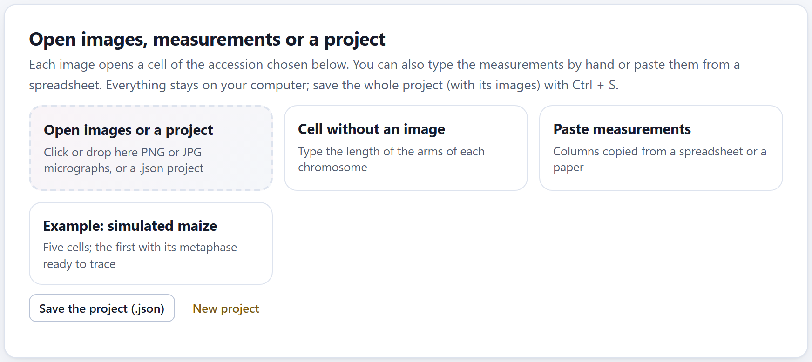
| Tile or button | What it does |
|---|---|
| Open images or a project | Click or drop here .png or .jpg micrographs (several at once) or a .json project. Each image opens a new cell in the accession chosen in the next card, named after the file without its extension; if there are no accessions yet, the app creates “Accession 1.” When it is done, it switches by itself to the Calibrate tool and says so: “Start by calibrating with the scale bar.” |
| Cell without an image | Creates a cell with four empty rows in the table of measurements, to type in the length of the arms by hand (Section 2.6). |
| Paste measurements | Opens (or closes) a box where you paste columns copied from a spreadsheet or a paper (Section 2.6). |
| Example: simulated maize | Opens the maize example. It replaces the project, and if there are already data it asks first. |
| Save the project (.json) | Saves the whole project—accessions, cells, images, traces and the content of the other blocks—in a single file. It is the same as Ctrl + S. |
| New project | Empties the app. If there are data, it asks first: “Start a new project? Anything not saved will be lost.” |
While there are no cells, a box, There are no cells yet, takes the place of the next cards and reminds you of the four ways to get started.
Only PNG or JPG images and .json projects are opened; with any other file the app warns you. An image over 25 MB is opened, but with a warning: the project stores it inside and becomes heavy. Crop each photograph to the metaphase before opening it. If the files you drop include a .json, only the project is opened.
An accession is a sample: a population, a collection, a variety. Its cells are the metaphases you measured from it, and Block 3 averages them to obtain its karyotype. A project can have several accessions, each with its cells.
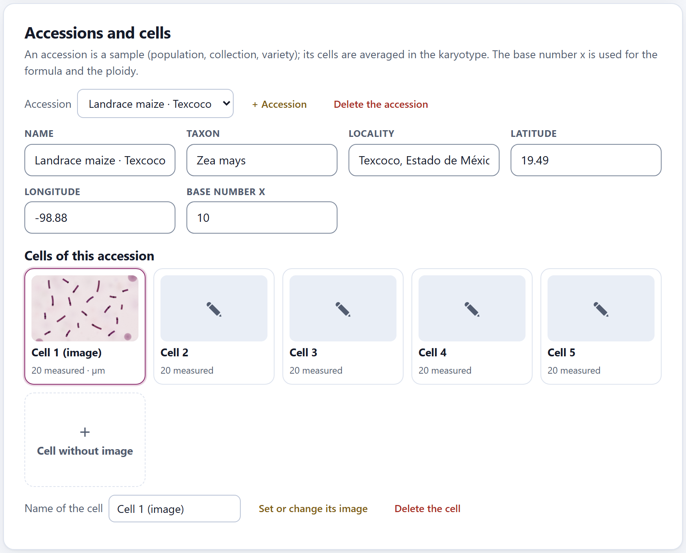
Any change in the measurements, the calibration or the cells marks the karyotype of that accession to be computed again: Blocks 3 and 4 redo it the next time you open them. There is no need to tell them anything.
When the selected cell has an image, the card Measuring on the image appears: at the top, the toolbar; on the left, the canvas with the micrograph; on the right, a panel with the help for the active tool and the data of the cell.
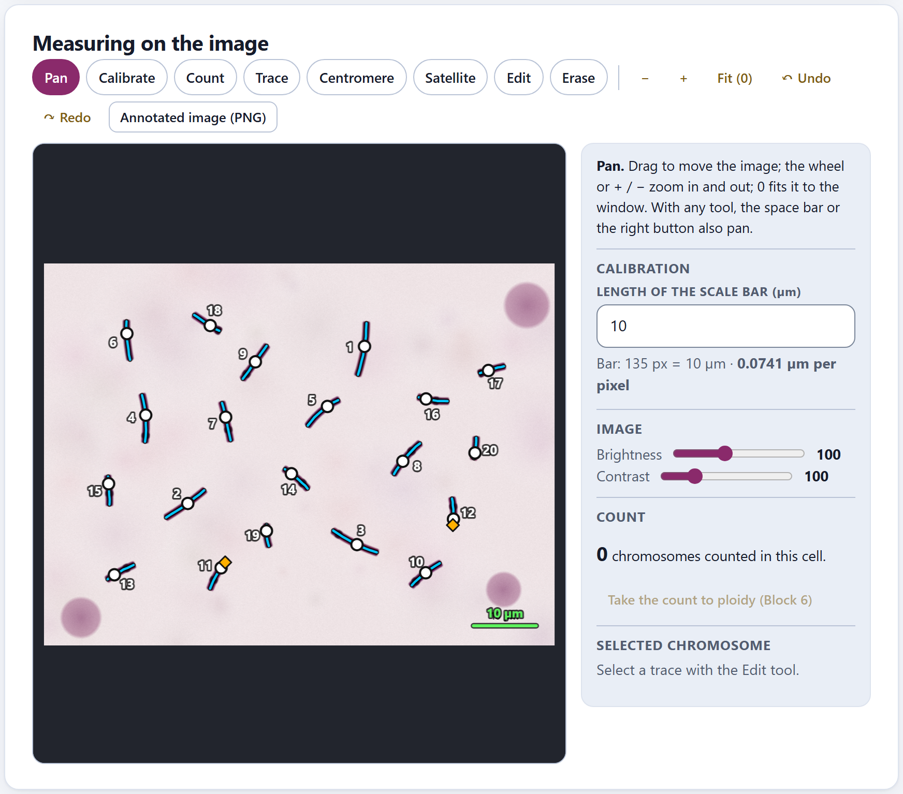
1 2 3 4 5 6 7 8 9 10V), Calibrate (C), Count (N), Trace (T), Centromere (M), Satellite (S), Edit (E) and Erase (B). The active one is filled with color.Ctrl + Z and Ctrl + Y (Section 2.5).With Pan you drag the image; the mouse wheel zooms in and out around the pointer, + and − do so around the center, 0 fits the image to the window and the arrow keys scroll it. With any other tool you can also pan by dragging with the right button or with the space bar held down, so there is no need to keep switching tools. Zooming changes no measurement: the traces are stored in pixels of the original image.
A length in pixels says nothing by itself: it depends on the objective, the camera and how the image was saved. That is why each cell is calibrated with the micron bar of its own photograph. With Calibrate, drag a line from one end of the bar to the other and type its length in Length of the scale bar (µm) (10 by default). From then on all the measurements of the cell are in microns, and the panel gives the scale: in cell 1 of the example maize, “Bar: 135 px = 10 µm · 0.0741 µm per pixel.”
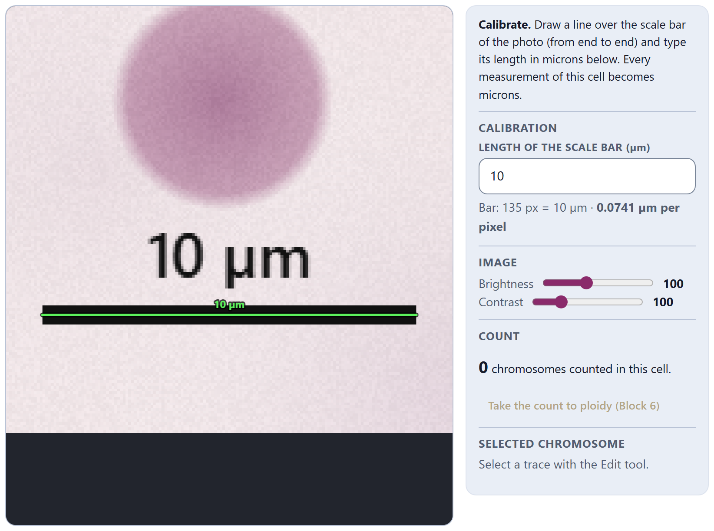
The bar measures 10 µm and the line drawn over it, 135 pixels: 10 / 135 = 0.0741 µm per pixel. An arm that measures 50 pixels along its trace then measures 50 × 0.0741 = 3.70 µm. If you change the length of the bar after calibrating, all the measurements of the cell are recomputed with the new scale, and the change can be undone.
As long as a cell with an image is not calibrated, its measurements come out in pixels: the panel says “Not calibrated: measurements come out in pixels. Use the Calibrate tool.”, its tile says not calibrated and the summary warns about it (Section 2.7). A line shorter than six screen pixels does not count as a calibration, so that an accidental click does not change it.
Calibrate every cell even if they all come from the same microscope: if a photograph was cropped or saved at another size, its scale changes. Uncalibrated cells must not be mixed with calibrated ones: Block 3 would average pixels with microns.
The controls Brightness (from 40 to 200) and Contrast (from 40 to 300), at 100 by default, help to make out the ends and the centromere in a pale or dark preparation. They are saved with each cell, they also apply to the annotated image and they touch neither the measurements nor the original image.
With Count, a click on each chromosome leaves a yellow mark with its serial number, and the panel keeps the tally: “20 chromosomes counted in this cell.” To remove a mark, use Erase. You can count before or after tracing, and counting does not require tracing: it is the quick way to record the 2n of many cells, even if you are only going to measure some of them.
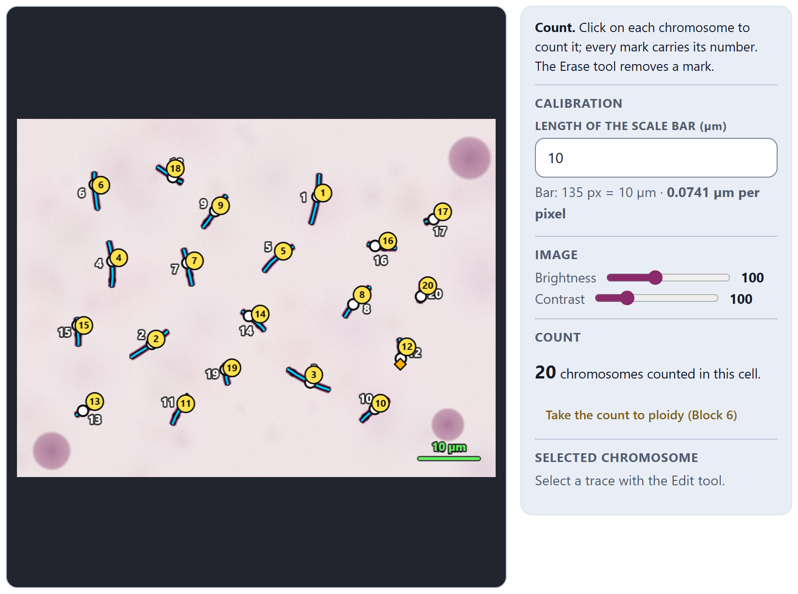
Take the count to ploidy (Block 6) writes the count into the table of counts of Block 6, with the accession and the name of the cell; if that cell already had a row, it replaces it. The app confirms it, for example: “Count sent to Block 6: 2n = 20 in “Cell 1 (image)”.” There the mode of each accession and its ploidy level are computed (Chapter 6).
A chromosome is measured in three steps: its axis is traced from one end to the other, its centromere is marked and, if it has one, its secondary constriction. All three are done on the image, and the app measures along the trace.
With Trace, click along the chromosome, from one telomere to the other, following its curvature; each click adds a point. You can also hold the button down and trace freehand: the app takes a point every six screen pixels. To finish, double-click or press Enter; Backspace removes the last point and Esc cancels the trace. While you trace, the line is pink and follows the pointer.
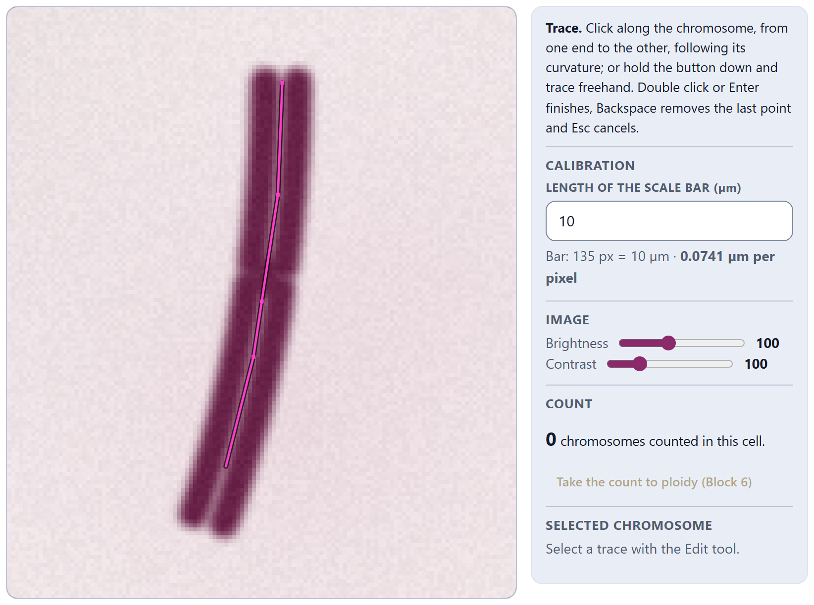
When you finish, the chromosome receives the first free number of the cell (1, 2, 3…) and the app switches by itself to Centromere, because a trace without a centromere does not yet give arms: its number is shown in orange, its tile counts it as incomplete and the table of measurements says no centromere. A trace shorter than three pixels is discarded.
The trace is a polyline: a chain of straight segments. Its length is the sum of the lengths of its segments, and with enough points it approaches that of the curved axis of the chromosome. A straight line between the two ends of a bent chromosome would shorten it; the polyline measures what the chromosome would measure stretched out. The positions of the centromere and the satellite are stored as distances along the polyline, from its first point.
With Centromere, click on the trace where the primary constriction is. You do not need to hit the line: the app moves the click to the nearest point of the trace (of the selected chromosome, or of the one closest to the click) and measures both arms along the curvature. The shorter arm is p and the longer, q. A new click changes the position of the centromere. The centromere is drawn as a white circle.
Some chromosomes have a secondary constriction, almost always on the short arm, where the nucleolus organizer region lies; the piece beyond it is the satellite (Battaglia, 1955). With Satellite, click on the trace at the secondary constriction: what is left to the end of that arm is the satellite, and it is drawn with an orange diamond. The centromere must be marked first; otherwise the app reminds you: “First mark the centromere of this chromosome.”
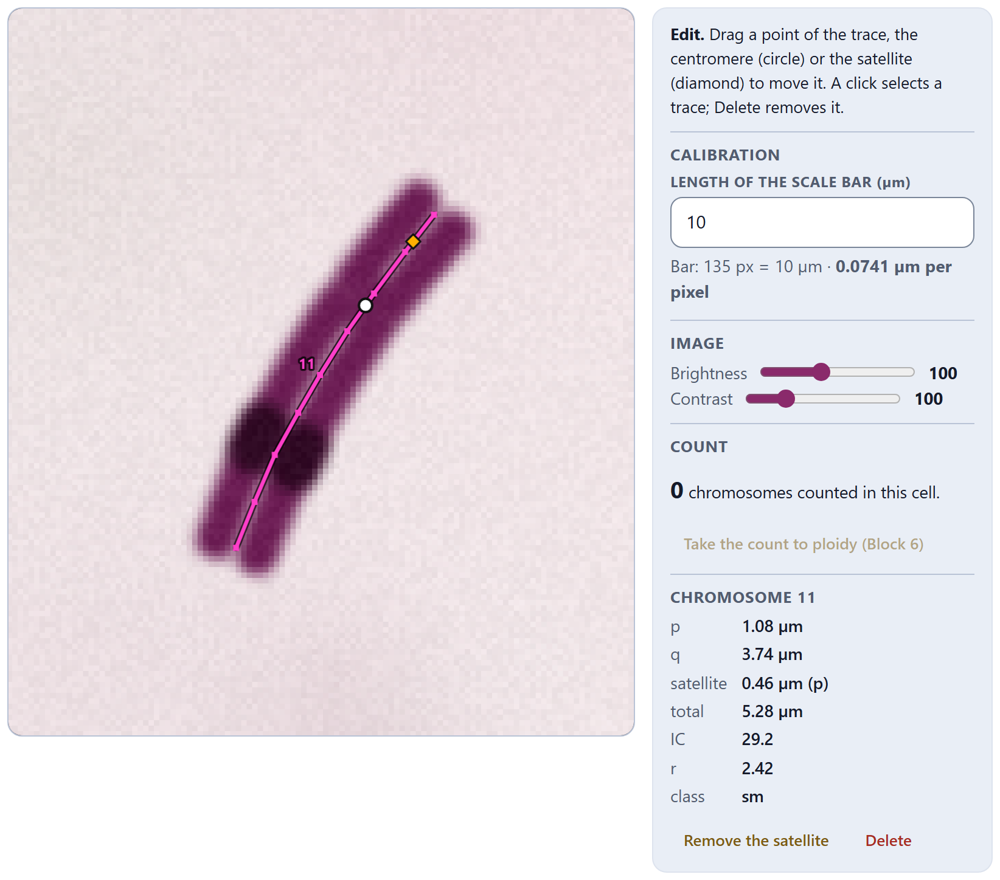
The panel says p = 1.08 µm, q = 3.74 µm, satellite = 0.46 µm (on p) and total = 5.28 µm. The p arm is given without the satellite, which goes separately. For the class, however, the app adds the satellite to its arm, as Block 3 does by default: the whole short arm measures 1.08 + 0.46 = 1.54 µm, so the centromeric index (“IC” in the panel) is 100 × 1.54 / 5.28 = 29.2 and r = 3.74 / 1.54 = 2.42, a submetacentric (sm). It is one of the two homologues that form pair 6, the satellite pair, in Block 3.
When you mark a centromere or a satellite, the app announces the measurements to screen readers (“Chromosome 11: p 1.08, q 3.74, satellite 0.46”), so the editor can also be used with them.
With Edit, a click on a trace selects it: it is drawn in pink, with its points in view, and its row is highlighted in the table. Once it is selected, you can drag any of its points to correct the trace, and drag the centromere or the satellite along the line. Delete removes the selected trace. A click on an empty spot deselects it and, if you drag, pans the image.
The panel Selected chromosome then turns into Chromosome with its number (Figure 2.7) and gives p, q, the satellite and its arm, the total, the centromeric index, r and the class with the scheme chosen in Block 3. If the trace lacks a centromere, it gives only its length and says so. Two buttons act on it: Remove the satellite (only if it has one) and Delete.
With Erase, a click on a count mark removes it; if there is no mark nearby, it removes the trace under the click. The marks are renumbered automatically. Whatever you erase comes back with ↶ Undo.
↶ Undo (Ctrl + Z) and ↷ Redo (Ctrl + Y or Ctrl + Shift + Z) step through the latest changes of the cell: traces, centromeres, satellites, moved points, count marks, calibration and deletions, up to 120 steps back. With a trace half done, ↶ Undo discards it. The history belongs to the open cell: choosing another cell starts a new one.
Annotated image (PNG) downloads the micrograph at its original resolution, with the brightness and contrast you chose and with everything you drew on it: the calibration line, the count marks, the traces with their number, the centromeres and the satellites. The file name is made of the accession and the cell and ends in _anotada.png. It is the figure worth keeping with the raw data, because it shows exactly what was measured.
The card Measurements of the cell gives one row per chromosome of the selected cell, with or without an image.
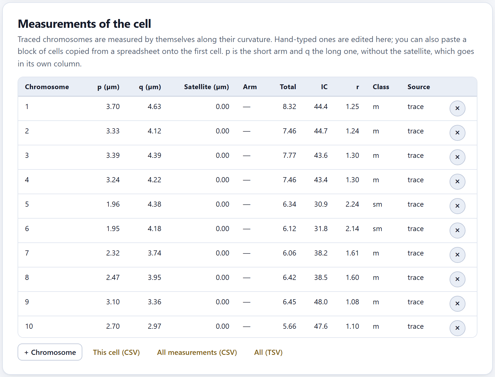
| Column | What it contains |
|---|---|
| Chromosome | The number or name of the chromosome in the cell. |
| p · q | The short and the long arm, without the satellite, in µm (or in px if the cell with an image is not calibrated). |
| Satellite · Arm | The length of the satellite and the arm that carries it (p or q). |
| Total | p + q + satellite. |
| IC · r | The centromeric index (headed “IC”) and the arm ratio, with the satellite added to its arm as in the example of chromosome 11. |
| Class | m, sm, st or t (and M or T in the exact cases), with the scheme of Block 3; no centromere if the trace is incomplete. |
| Source | trace if it comes from the image; typed if it was typed or pasted. The × button deletes the row. |
In a cell without an image, or for the chromosomes that were not traced, each value is an editable field: the name, p, q, the satellite and, in a list, its arm. + Chromosome adds an empty row. If you copy a block of cells from a spreadsheet (p, q and satellite, several rows) and paste it onto a p cell, the app fills the rows downward and creates the ones that are missing.
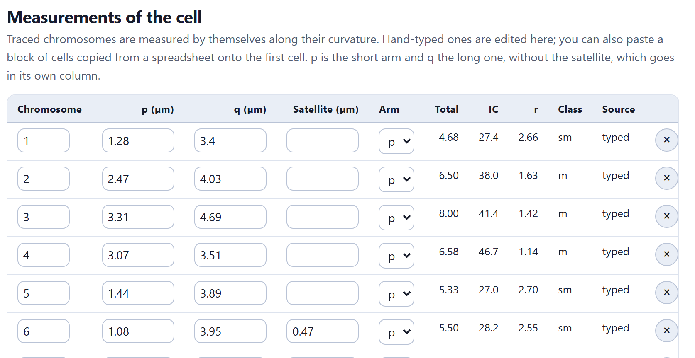
At the foot of the table, This cell (CSV) downloads the measurements of the selected cell; All measurements (CSV) and All (TSV), those of the whole project, in mediciones.csv or mediciones.tsv. The columns are accession, taxon, cell, chromosome, p, q, satellite, satellite arm, unit (µm or px) and source; incomplete traces are not exported.
If you already have the measurements in a spreadsheet or in the table of a paper, Paste measurements reads them in one go. One row per chromosome, in microns, with tab, semicolon or comma as the separator:
Rows without a valid number for p (zero or more) and for q (greater than zero) are skipped, and the message says which ones. Accessions are looked up by name and those that do not exist are created, with their taxon if the table carries it; a table with a taxon and no accession column makes one accession per taxon. Rows that name no accession go to the selected accession, which is created only if needed.
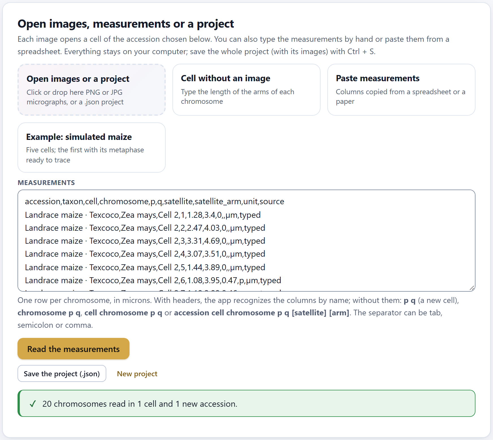
What This cell (CSV) and All measurements (CSV) export can be pasted back as it is, in this project or in another: the app reads the accession, the taxon, the cell, the chromosome, p, q, the satellite and its arm, and the unit. If a cell was exported in pixels (not calibrated), it stays in pixels when it comes back, and the message says so: “One cell comes in pixels (not calibrated).”
The last card sums up everything measured in the project, in four figures and one table per accession, and warns about what is worth checking before moving on to the karyotype.
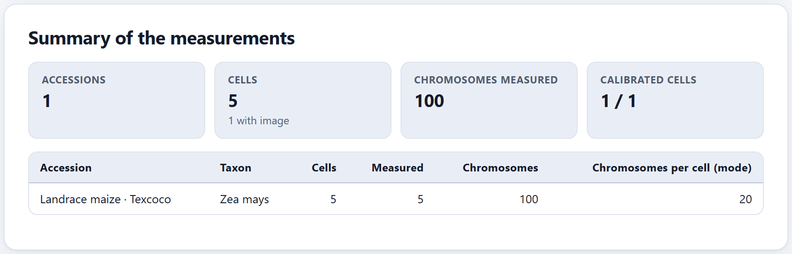
The four figures are Accessions, Cells (with how many have an image), Chromosomes measured (the complete ones: a trace without a centromere does not count) and Calibrated cells among those with an image, which adds how many cells without an image are in pixels and is flagged as a warning if any still needs calibrating. The table gives, per accession, its taxon, its cells, how many have measurements, how many chromosomes and the mode of chromosomes measured per cell. Two warnings may appear below:
| If Calibrated cells is not “n / n” | then calibrate the missing ones with their scale bar. |
| If a cell has incomplete traces | then mark their centromere or delete them; they do not enter the karyotype. |
| If the summary warns that the number varies among cells | then look for the missing chromosome or the one traced twice; if the cell is truly aneuploid, note it and consider leaving it out of the karyotype. |
| If you only counted, without measuring | then take the counts to Block 6; the karyotype needs measurements. |
| If everything is in order | then save the project (Ctrl + S) and move on to Block 3. |
It is worth measuring several well-spread metaphases per accession; the app accepts any number, and Block 3 shows the deviation among cells.
The tool keys do nothing. The canvas must have the focus: click on the image or on the tool’s button. “Click on the trace of a chromosome.” The click with Centromere or Satellite landed far from any trace: zoom in and try again. The measurements come out in px. The cell is not calibrated. A chromosome does not appear in the summary. It lacks its centromere. p and q came out the other way around from what you expected. The app calls p the shorter arm (with its satellite), regardless of which end you started tracing from. I calibrated with the wrong length. Correct the number in Length of the scale bar (µm): everything is recomputed. The project is very heavy. The images go inside the .json: crop them to the metaphase before opening them.